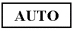
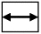

Operating Documentation
Direction 5133315-3, Rev# 14
Module Version 1.0, Version Date 5/3/07
Operating Documentation |
The functions of the OSMä controls on the front of the monitor are described in Table 10-1. To access the OSM, press any of the control buttons or the PROCEED or EXIT button.
Continue to On-Screen Controls.
This section describes the adjustments available for the OSM controls.
Brightness and Contrast 
Brightness: Adjusts the overall image and background screen brightness.
Contrast: Adjusts the image brightness in relation to the background.
Auto Adjust Contrast: Adjusts the image displayed for non-standard video inputs.
Auto Adjust 
Position Controls 
“H” Position: Controls Horizontal Image Position within the display area of the LCD.
“V” Position: Controls Vertical Image Position within the display area of the LCD.
Image Adjust Controls 
“H” Size: Adjusts the horizontal size by increasing or decreasing this setting.
Fine: Improves focus, clarity, and image stability by increasing or decreasing the Fine setting.
Auto Adjust Coarse: Automatically adjusts the Coarse setting.
AccuColor® Control System 
Five color presets select the desired color setting. This setting must be set to selection 1 - 9300. If a setting is adjusted, the name of the setting will change to Custom.
R, B, G: Increases or decreases the color depending upon which is selected. The change in color will appear on screen and the increase or decrease will be shown by the color bars.
OSM H POS./OSM V POS. 
OSM Lock Out
ALL RESET
Information